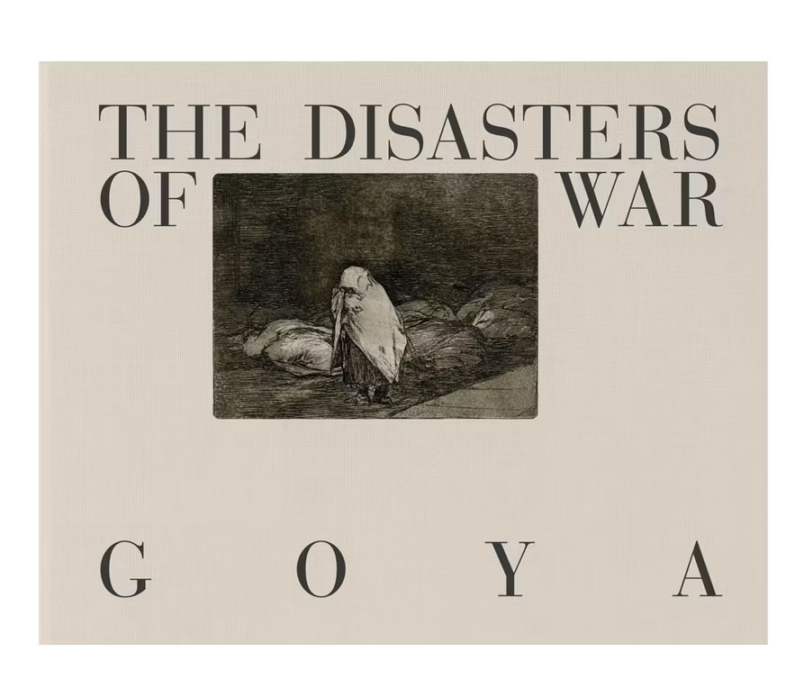

Goya: The Disasters of War
Publication Details
About This Book
"The Disasters of War", eighty invented and etched plates by Francisco de Goya. In 1808, at the end of the first siege of Saragossa by Napoleon's troops, Francisco de Goya was invited with a number of other artists to visit the devastated city and arouse the people's patriotic fervour through a series of propaganda pictures and prints. Far from the glorification that had been entrusted to him, what Goya depicted was a universal condemnation of violence.
Terribly contemporary, these images continue to assail us more than two hundred years later. To the horrors he saw in Saragossa, Goya added scenes of the famine he witnessed in Madrid and a series of symbolic prints on the post-war period that he entitled "Emphatic Caprices", in which he showed the loss of the constitutional ideals with the return of absolutism. The three blocks - War, Famine and Emphatic Caprices - constitute The Disasters of War, a work which Goya completed in 1820 but whose publication was delayed owing to its critical nature until 1863, 35 years after his death.
Appearing beneath each figure is a legend or caption, short text - sometimes just one word - which Goya included with expressive precision. The set, numbered by the artist himself, cries out to us with a moving narrative that was unusual for the time in making the denunciation of war its principal theme. The Aragonese artist can thus also be regarded as a pioneer of protest art.
The Disasters of War, then, is a book of images for reading. Profoundly humanist, this reading is especially fitting in the context of today's flow of information, marked by the impact of the visual message and of brief texts. It begins with a prelude, "Sad forebodings of what is to befall", and culminates in an open ending: "Truth is dead"; "Will she rise again?
" That question leaves the door open to hope. Based on the original 1863 edition, this clothbound book faithfully reproduces the first edition of the complete set of 80 works: 1-47 WAR, 48-64 FAMINE, 65-80 EMPHATIC CAPRICES.